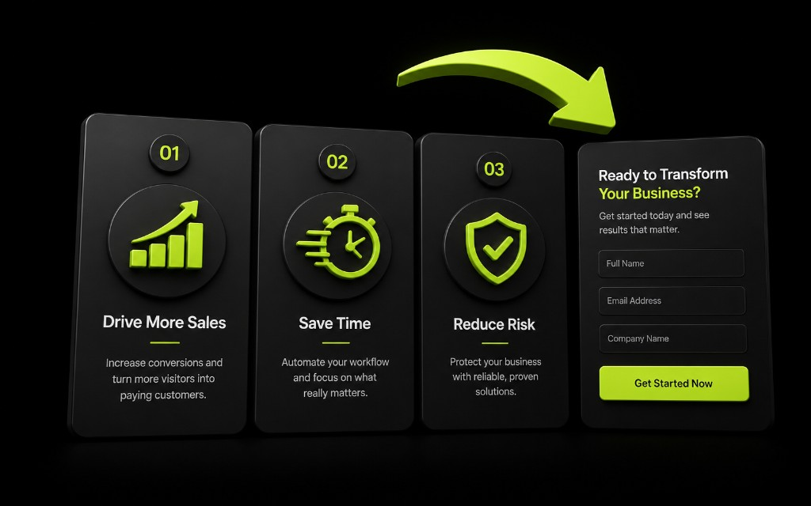

Лендинг — это воронка, не брошюра
Красивая страница без ясного действия не конвертирует. В Ташкенте мы часто видим лендинги с пятью блоками «о нас» и формой где-то в подвале. Человек с рекламы в Telegram или из поиска уходит за 8 секунд, если не понял, что ему предлагают и что сделать дальше.
Задача лендинга: быстро объяснить ценность и довести до заявки — в форму, в Telegram-бот или в звонок. Дизайн поддерживает этот путь, а не наоборот.

Каркас, который работает чаще других
- Оффер и кому это: одна мысль в первом экране.
- Доказательства: цифры, кейсы, факты без воды.
- Как это работает: 3–5 шагов.
- Возражения: сроки, цена «от», гарантии процесса.
- CTA и форма/бот — повторённые, но не навязчивые.
SEO-тексты можно нарастить аккуратно, но не ценой читаемости. Скорость сайта и мобильная вёрстка — часть конверсии: медленный первый экран убивает даже сильный оффер.
Оффер без канцелярита
Плохо: «Инновационные решения для вашего бизнеса». Хорошо: «Лендинг и Telegram-бот под заявки за 4–6 недель — с аналитикой и передачей в CRM». Пишите языком покупателя. Для бизнеса в Узбекистане часто важны срок, понятная цена входа и кто будет на связи после запуска.
- Один главный CTA на экран — не десять равнозначных кнопок.
- Форма короткая: имя, контакт, вопрос.
- Альтернатива: «Написать в Telegram» рядом, если так привычнее аудитории.
Доказа vis доверия
Покажите реальные проекты, ролики/скрины, отзывы с контекстом, команду или процесс. Пустые стоковые фото «рукопожатий» не заменяют кейс. Если кейсов мало — честно опишите метод: бриф → прототип → запуск → поддержка.
Аналитика конверсии
Без событий вы не узнаете, где теряете людей. Минимум: просмотр, клик по CTA, отправка заявки, источник. Тогда можно править текст и порядок блоков по данным, а не по вкусу директора.
Когда не надо делать «длинный лонгрид»
Если продукт простой и аудитория тёплая — короткий лендинг сильнее простыни. Не добавляйте блоки ради «полноты». Каждая секция должна двигать к заявке или снимать конкретное возражение. Иначе вы строите музей, а не продажи.
Соберите MVP-страницу, запустите трафик, измерьте, улучшайте. Конверсия растёт итерациями, не одним «идеальным» макетом.
Типичные ошибки лендингов в Ташкенте
Первый экран без действия. Телефон только в футере мелким шрифтом. Форма на 12 полей. Сток «команда мечты» вместо реальных проектов. Автопроигрываемое видео, которое убивает скорость сайта. Обещания SEO топ-1 в герое без доказательств. Всё это мы видим регулярно — и стабильно оно режет заявки.
Ещё ошибка — смешать три аудитории в одном тексте. Если вы делаете сайты для услуг и отдельно ботов для e-commerce, либо сегменты, либо отдельные посадочные. Иначе оффер размывается, аналитика врёт, а менеджер не понимает, о чём был лид.
Работайте с возражениями прямо: сроки, что входит в MVP, как проходит бриф, что с поддержкой. Скрывать цену «от» иногда нужно, но совсем без ориентира люди уходят писать конкурентам. Telegram-кнопка снимает часть барьера — используйте её осознанно, не прячьте.
После запуска назначьте владельца конверсии. Раз в неделю смотрите воронку: клик CTA → отправка → ответ. Меняйте один элемент за итерацию: заголовок, порядок блоков, текст кнопки. Иначе не узнаете, что сработало.
Лендинг живой, пока живёт трафик и команда продаж. Обновляйте кейсы, убирайте мёртвые акции, следите за формой. Конверсия — это эксплуатация, не разовый запуск «под ключ».
Связка лендинга с рекламой и ботом
Заголовок объявления и H1 должны быть родственниками. Иначе человек чувствует подвох. То же с креативом: если в Telegram показали цену «от», на лендинге её нельзя прятать глубоко без пояснения. Честность снижает стоимость лида.
Кнопка в бота не отмена формы: разным людям удобны разные каналы. Дайте оба, но измерьте, что конвертит в вашей нише. Иногда бот выигрывает на мобильном, форма — на десктопе. Аналитика скажет точнее гипотезы.
Не перегружайте первый экран сертификатами, статистикой и пятью CTA. Hero budget простой: оффер, одно пояснение, действие, визуал. Остальное — ниже, по мере интереса. Так лендинг читается быстрее и выглядит увереннее.
Раз в две недели обновляйте один доказательный элемент: новый кейс, новая цифра, новый FAQ. Живой лендинг обгоняет «идеальный, но замороженный». Для рынка Ташкента это заметное преимущество в нишах с высокой конкуренцией подрядчиков.
Мини-аудит лендинга за 30 минут
Откройте страницу с телефона. Понятен ли оффер без скролла? Видна ли кнопка действия? Работает ли форма и запасной Telegram-канал? Нет ли тяжёлого hero? Есть ли доказательство, что вы не пустой шаблон?
Проверьте согласование с рекламой и брифом. Проверьте события аналитики. Проверьте, что успех-страница не 404. Если два пункта красные — чините до масштабирования бюджета.
Спросите менеджера продаж, какие три возражения слышит чаще. Есть ли ответы на лендинге? Если нет — это ваш следующий блок, а не новый слайдер отзывов со стоками.
Повторяйте аудит после каждой крупной правки. Конверсия — навык эксплуатации. Лендинг в Ташкенте конкурирует не только красотой, но и ясностью и скоростью ответа на заявку.
Что измерять, кроме «красиво/некрасиво»
Смотрите CTR с рекламы на лендинг, долю доскроллов до формы, конверсию в заявку, скорость ответа, долю квалифицированных лидов. Эти метрики связывают маркетинг, сайт и продажи. Споры о цвете кнопки без цифр — развлечение, не управление.
Назначайте гипотезы: «если сократим форму до трёх полей — вырастет отправка». Меняйте одно, ждите статистику. Для малого трафика смотрите качественно: записи разговоров, причины отказа. В Узбекистане даже десяток глубоких разговоров многое объясняет.
Держите лендинг в тонусе: обновляйте оффер, следите за скоростью сайта, проверяйте форму каждое утро больших кампаний. Конверсионная страница — живой инструмент, а не памятник запуску.
Короткий вывод: лендинг продаёт ясностью и коротким путём к заявке. Держите оффер, доказательства, CTA и рабочую форму. Измеряйте воронку, согласуйте тексты с рекламой и ботом, не перегружайте первый экран. Итерации по данным бьют идеальный макет без трафика — особенно в конкурентных нишах Ташкента.
Практический совет напоследок: зафиксируйте ответственного и дату следующего разбора цифр. Без даты улучшения растворяются в операционке. Для команд в Ташкенте короткий ритуал раз в две недели — достаточная частота, чтобы сайт, лендинг или Telegram-бот не застаивались и продолжали приносить заявки.